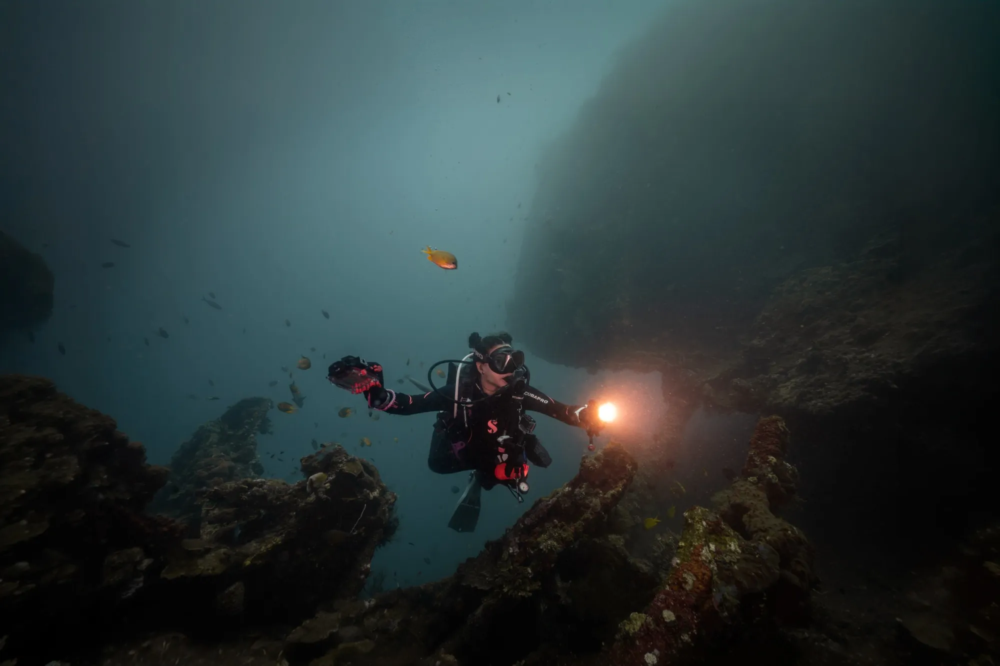
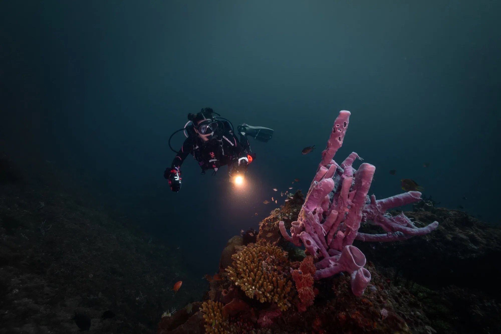

Sin experiencia
Sin experiencia
Bautizo de Buceo
Tu primera bocanada bajo el agua, en la piscina y luego en el arrecife, con un instructor siempre a tu lado.
IDR 1.050.000≈ 55 € · impuestos incluidos
Ver curso →
Centro de Buceo Boutique · Amed · Bali
Nunca más de cuatro buceadores por salida, y te recibimos como en casa. Cada curso, cada inmersión y cada consejo se adapta a ti, en arrecifes que conocemos palmo a palmo y que ayudamos a proteger.
Todo desde la costa, todo en el tramo Amed–Tulamben que llevamos años conociendo, y cuidando. Guía, equipo completo, transporte y café en la playa al salir, siempre incluidos.
 5–30 m · Pecio
5–30 m · Pecio
 3–25 m · Arrecife
3–25 m · Arrecife
 2–12 m · Pecio
2–12 m · Pecio
 5–22 m · Arrecife artificial
5–22 m · Arrecife artificial
 2–12 m · Arrecife
10–40 m · Pared
2–12 m · Arrecife
10–40 m · Pared
 4–20 m · Arrecife
5–20 m · Muck y macro
4–20 m · Arrecife
5–20 m · Muck y macro

Se Empieza en Nuestra Piscina · Se Termina en un Pecio de la II Guerra Mundial
De tu primera bocanada bajo el agua a hacerte profesional, a tu ritmo, no al de un horario. Cada curso empieza en nuestra piscina privada, sigue con entradas tranquilas desde la orilla, y nunca tiene más de cuatro buceadores por instructor. No serás un número de reserva; al segundo día ya eres de la familia. Y sí: todos los cursos, en español de principio a fin.
Sin experiencia
Tu primera bocanada bajo el agua, en la piscina y luego en el arrecife, con un instructor siempre a tu lado.
El más pedido
La titulación de buceo más popular del mundo, en tres días de piscina y cuatro inmersiones en los arrecifes de Amed.
Sube de nivel
Cinco inmersiones de aventura, con profunda y navegación, y sí, una puede ser el pecio del USAT Liberty.
El más gratificante
El curso que los buceadores llaman el más gratificante que han hecho. Simulacros que te convierten en un compañero de verdad.
Hazte pro
Fórmate con nuestro equipo hasta dos meses y sal siendo profesional del buceo. Con opción de inmersiones ilimitadas.
 Especialidad
Especialidad
Nitrox desde IDR 2.150.000, Buceo Profundo, Pecios, Sidemount, con el Liberty subiendo la costa, este es el sitio para hacerlas.
Los arrecifes de Amed son nuestro lugar de trabajo, nuestra aula y nuestra casa. La conservación no es una página de la web: es cómo empieza cada briefing y cómo se guía cada inmersión.
Flotabilidad perfecta antes que nada. Cada buceador que formamos se va sabiendo disfrutar de un arrecife sin tocarlo, es la habilidad que más orgullosos estamos de enseñar.
Limpiezas de arrecife y de playa, seguimiento de los sitios que buceamos a diario, y la voz de alarma cuando algo cambia. Pregúntanos qué pasa en el arrecife esta temporada. No sabremos parar de hablar.
Somos un equipo pequeño con raíces en este pueblo, trabajando junto a la comunidad local que depende de un arrecife sano tanto como nosotros.
Una escuela pequeña de gestión española con más de veinte años en el agua entre todos, enseñando en español, catalán, inglés, francés e indonesio. Bucearás con las mismas caras toda la semana. Esa es la gracia.

Master Scuba Diver Trainer
Instructor Elite de PADI y buceador profesional. Estará contigo en la piscina desde el primer día.

Divemaster · Biólogo
Conoce cada bicho del arrecife por su nombre, el latino y el local.

Recepción
La primera sonrisa que verás, y la persona que hace que todo salga a su hora.
"Soy feliz buceando y, cuando salgo del agua, soy feliz pensando en lo que he buceado."
Eduardo Admetlla · Pionero del buceo español
Aloja y Bucea
Bungalós entre los arrozales, a 500 metros de la playa de Melasti. Te levantas, desayunas y vas andando al briefing. Los packs de curso con alojamiento te ahorran las cuentas.
Open Water + 3 noches · IDR 6.300.000
Packs aloja y bucea →"Sentimos que no podíamos haber elegido un sitio mejor."
Alumno de Open Water · Reseña de Google
"Una escuela de buceo auténtica, y lo digo como profesional del buceo."
Instructor de visita · Reseña de Google
"Acogedores, amables y siempre pendientes. Una experiencia increíble de principio a fin."
Buceadora · Reseña de Google

Dinos tus fechas por WhatsApp y montamos el viaje a tu medida, normalmente en menos de una hora.